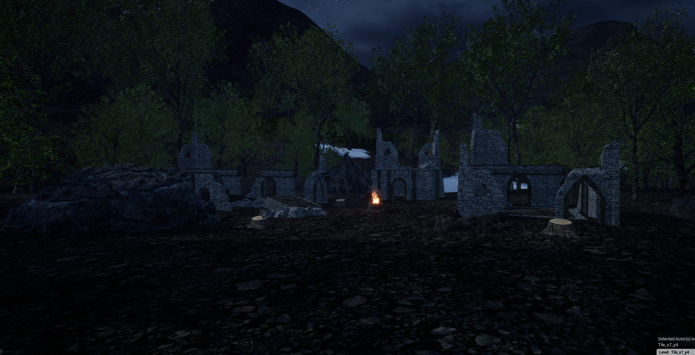

A Dragons Call
A Dragon's Call is a fantasy open world prototype game where I worked with two 3D artists and another developer.
Some of the tasks I made:
• Built a playable MVP of 10 min with one main quest, minimal level design and various mechanics.
• Lead two 3D artists to deliver high quality assets for world building.
• Used landcape tools to sculpt the world and world composition to load/unload zones.
• Created high quality images for kickstarter campgain using photoshop.
Tools & resources used:
• Unreal Engine 5
• Autodesk Maya
• Substance 3D Painter
• Photoshop
Windows build available on itch.io.

Ancient Ruins where player finds a portal

Village part of the main mission

General view of the village


Complete Gameplay
10 minutes of the MVP prototype game (Before environment design)